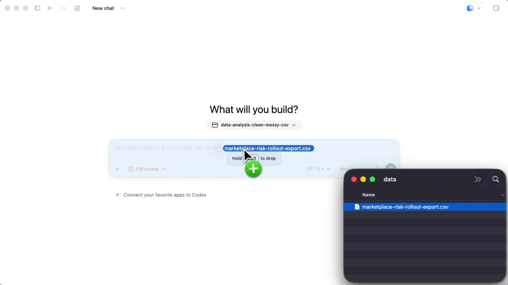

Kết quả tìm kiếm
Codex cho người mới: tổ chức tài liệu, giao việc bằng prompt và xây Brain cá nhân
Chọn một phần để bắt đầu. Các khối văn bản có nút Sao chép.
LỘ TRÌNH THỰC HÀNH
Từ một folder nhỏ đến trợ lý làm việc có quy tắc
Đi theo thứ tự. Hoàn thành bước 4 trước khi mở rộng sang skill và Brain. Bấm vào từng bước để tới đúng hướng dẫn.
Chọn cách bắt đầu
Tự tạo từ đầu: làm lần lượt theo các bước để thấy hướng dẫn và skill thay đổi cách agent làm việc.
Dùng bộ mẫu tải sẵn: giải nén ZIP vào một vị trí local rồi mở chính folder TRO_LY_CONG_VIEC. Bộ này đã có INPUT, README, AGENTS, skill và Brain; đọc và đối chiếu mẫu, bỏ qua việc tạo lại các file đã có. REFERENCE và OUTPUT chưa có kết quả bài tập: vẫn chạy prompt phân loại, tóm tắt và truy vấn. Không ghi đè file đang có khi thử lại.
Codex có thể đọc tài liệu trong folder bạn chọn, tóm tắt quy trình, soạn bản nháp và tìm lại thông tin đã ghi. Bạn không cần biết lập trình. Hãy bắt đầu với folder nhỏ, chỉ rõ nguồn và nơi lưu, rồi xem lại file trước khi sử dụng.
Bài này dùng doanh nghiệp giả lập Xưởng Trà Mộc. Bốn tài liệu dưới đây hoàn toàn hư cấu; bạn có thể thay bằng tài liệu mình được phép sử dụng sau khi làm xong bài tập.
Mục tiêu: mở folder local bằng Codex, tạo bản tóm tắt có nguồn, thêm
AGENTS.md, thử một skill và tạo Brain nhỏ có chỉ mục.Ngày đối chiếu tài liệu chính thức: 06/11/2026. Nhãn nút thay đổi theo phiên bản; xem Codex Quickstart khi màn hình khác.
Dùng bài này như thế nào?
Thực hành trên dữ liệu giả lập. Làm đúng từng bước, kiểm lại nguồn và mở file kết quả trước khi dùng. Ảnh giao diện trong bài được dẫn từ nguồn chính thức; tên nút có thể khác theo phiên bản.
Mục lục phần này
Bắt đầu
1. Cài ChatGPT Desktop và mở Codex

Mục tiêu: vào Codex trong ứng dụng desktop và chọn một folder cụ thể.
- Tải ứng dụng từ ChatGPT Desktop hoặc đi theo Codex Quickstart; chọn Windows hoặc macOS.
- Cài ứng dụng, mở và đăng nhập. Nếu bạn đã có Codex app cũ, OpenAI thông báo app mới tích hợp Chat, Work và Codex; xem Help Center nếu tên ứng dụng khác.
- Chọn mục
Codextrong menu, sau đó chọn nơi làm việc: mở folder/project trên máy. Không chọn toàn bộ ổ đĩa, Documents hay Desktop. - Ở bước tiếp theo, tạo một folder local do bạn quản lý, rồi quay lại chọn đúng folder đó. Nếu Documents đồng bộ cloud, chọn vị trí local khác. Giữ quyền an toàn mặc định; đừng mở rộng quyền hoặc phê duyệt thao tác chưa hiểu.
Prompt sao chép:
Tôi mới dùng Codex và không làm kỹ thuật. Hãy chỉ tôi cách mở một folder local cụ thể. Chưa đọc hay sửa file; trước khi bắt đầu, hãy cho tôi xác nhận tên và đường dẫn folder.Kết quả mong đợi: Codex chờ bạn chọn folder hoặc báo folder đã mở. Nếu tên menu khác, theo hướng dẫn desktop hiện tại; điều quan trọng là chọn một folder riêng, không mở cả vùng dữ liệu cá nhân.
2. Tạo workspace và bốn file mẫu
Mục tiêu: tạo cùng bộ dữ liệu giả lập dùng trong cả hai bài. Tạo folder TRO_LY_CONG_VIEC ở một vị trí local bạn chọn, ví dụ máy thử có thể dùng C:\Users\An\AI_WORKSPACE\TRO_LY_CONG_VIEC. Hãy thay bằng đường dẫn thật trên máy của bạn.
Tạo năm folder INPUT, REFERENCE, WORKING, OUTPUT, ARCHIVE trước. Cây sau thể hiện thêm hai file README.md và AGENTS.md sẽ được lưu bằng mẫu ở phần 3; không tạo folder mang tên hai file này:
TRO_LY_CONG_VIEC/
├── README.md
├── AGENTS.md
├── INPUT/
├── REFERENCE/
├── WORKING/
├── OUTPUT/
└── ARCHIVE/Chưa tạo PROJECTS/, BRAIN/ hoặc .agents/skills/; chúng là phần mở rộng sau khi đã có kết quả đầu tiên. Không cần Terminal, Git, API key, MCP hay plugin.
Tạo bốn file dưới đây bằng Notepad hoặc TextEdit, nội dung đầy đủ được cung cấp ngay dưới đây:
Lưu đúng file văn bản — làm một lần trước khi tiếp tục:
- Windows / Notepad: chọn File → Save As; nhập tên đầy đủ, ví dụ
gioi-thieu-san-pham.md; chọn Save as type: All files, Encoding: UTF-8. Trong File Explorer bật View → Show → File name extensions để kiểm tra tên không thành.md.txt. - macOS / TextEdit: chọn Format → Make Plain Text trước khi dán; chọn File → Save, gõ đủ tên có
.md. Nếu ứng dụng hỏi dùng đuôi nào, chọn giữ.md; bỏ tùy chọn tự thêm.txtnếu có. Trong Finder → Settings → Advanced bật Show all filename extensions, kiểm tra file không phải.rtfhoặc.md.txt. - README và AGENTS trong cây là file, không phải folder. Bạn điền mẫu ở phần 3 rồi lưu chúng ở root. “Root” nghĩa là ngay trong
TRO_LY_CONG_VIEC/, cùng cấp vớiINPUT/. - Khi tới bước skill, tên folder là
.agents, có dấu chấm đầu tên. Finder dùng Command–Shift–. để hiện file ẩn; trên Windows bật View → Show → Hidden items nếu cần. Nếu trình duyệt file không cho tạo tên đó, nhờ agent tạo đúng folder trong workspace đã chọn, rồi mở lại để kiểm tra; không bỏ dấu chấm.
Trong prompt bên dưới, đường dẫn như INPUT/ten-file.md được tính từ root workspace đã xác minh. Dùng dấu / cho đường dẫn trong prompt trên cả hai hệ điều hành; không ghép đường Windows vào Mac. Khi thấy [DUONG_DAN_DAY_DU], thay bằng đường dẫn thật của chính bạn; trên Mac có thể là /Users/An/AI_WORKSPACE/TRO_LY_CONG_VIEC.
File INPUT/gioi-thieu-san-pham.md:
# Giới thiệu sản phẩm — Xưởng Trà Mộc
> Dữ liệu giả lập cho bài tập. Không đại diện cho doanh nghiệp thật.
Xưởng Trà Mộc là thương hiệu hư cấu bán trà lá đóng gói tại Việt Nam.
## Sản phẩm trong bài tập
- Tên: Trà Sen Sớm
- Quy cách: hộp 20 túi lọc
- Giá niêm yết giả định: 120.000 đồng/hộp
- Mô tả được phép dùng: trà hương sen dịu, đóng gói tiện để pha tại nhà hoặc nơi làm việc
## Chưa xác nhận
- Chưa có số liệu kiểm nghiệm thành phần.
- Chưa có chứng nhận hữu cơ.
- Chưa có dữ liệu khách hàng hoặc đánh giá thật.File INPUT/quy-trinh-xu-ly-yeu-cau.md:
# Quy trình xử lý yêu cầu — bản nháp giả lập
> Quy trình hư cấu để luyện tập; chưa phải hướng dẫn vận hành thật.
1. Ghi nhận nội dung và ngày nhận yêu cầu.
2. Phân loại: hỏi thông tin, đổi đơn, phản hồi chất lượng hoặc yêu cầu khác.
3. Nếu thiếu mã đơn hoặc mô tả, hỏi người gửi bổ sung; không đoán.
4. Chuyển trường hợp chất lượng cho người phụ trách xem xét.
5. Chỉ thông báo kết quả sau khi người phụ trách xác nhận.
6. Lưu bản tóm tắt đã duyệt trong hồ sơ dự án.
Không đưa dữ liệu cá nhân vào bài tập này.File INPUT/bien-ban-hop-2026-11-06.md:
# Biên bản họp giả lập — 06/11/2026
**Dự án:** thử nội dung giới thiệu Trà Sen Sớm của Xưởng Trà Mộc (hư cấu)
## Trao đổi
- Nhóm muốn thử một nội dung giới thiệu sản phẩm trong ba tuần.
- Hai kênh được cân nhắc: email và fanpage.
- Chưa có ngân sách được duyệt.
- Chưa có số liệu chuyển đổi hoặc khách hàng thực.
## Việc cần xác nhận
- Ai duyệt nội dung trước khi gửi/đăng.
- Ngân sách và thời gian bắt đầu.
- Chỉ số nào có thể đo trong từng kênh.
## Quyết định
Chưa chốt lịch phát hành. Không đăng hoặc gửi nội dung khi chưa được người phụ trách duyệt.File INPUT/yeu-cau-cong-viec.md:
# Yêu cầu công việc giả lập
Hãy chuẩn bị bản tóm tắt một trang để người phụ trách quyết định có nên thử nội dung giới thiệu Trà Sen Sớm trong ba tuần hay không.
Bản tóm tắt cần có:
- Mục tiêu dự kiến và đối tượng cần làm rõ.
- Hai kênh đang cân nhắc.
- Những thông tin đã có và nguồn của chúng.
- Những điều chưa được xác nhận.
- Các câu hỏi người phụ trách cần quyết định.
Không tự viết nội dung quảng cáo hoàn chỉnh, không gửi email, không đăng fanpage, không tự đặt ngân sách hoặc tuyên bố về tác dụng/chứng nhận sản phẩm.README.md là hướng dẫn tổng quan. File .md là văn bản thường: # tạo tiêu đề, - tạo danh sách; có thể đọc bằng trình soạn thảo mặc định.
Prompt phân loại, chưa move: thay [DUONG_DAN_DAY_DU] bằng đường dẫn thật đã copy từ File Explorer/Finder.
Workspace: [DUONG_DAN_DAY_DU]. Chỉ đọc các file:
- INPUT/gioi-thieu-san-pham.md
- INPUT/quy-trinh-xu-ly-yeu-cau.md
- INPUT/bien-ban-hop-2026-11-06.md
- INPUT/yeu-cau-cong-viec.md
Lập bảng: tên file, loại thông tin, nơi nên tra về sau, lý do. Chưa sửa, đổi tên, move hoặc xóa. Đánh dấu rõ dữ kiện giả lập và thông tin chưa xác nhận.Kết quả mong đợi: bảng phân loại có đủ bốn file, không có thay đổi. Nếu đường dẫn chưa đúng, sửa lại từ File Explorer; không cho Codex tìm toàn ổ đĩa.
3. Viết README và AGENTS rồi kiểm tra nạp
Mục tiêu: mô tả dự án và hướng dẫn Codex làm việc đúng chỗ.
Thực hành sắp xếp sau khi xem bảng phân loại
Trong bài này, giữ bản gốc ở INPUT. Bạn sẽ tạo một bản sao có kiểm soát của tài liệu sản phẩm trong REFERENCE để tập quản lý nguồn. Đây vẫn là dữ liệu giả lập; xác nhận bản sao đúng nội dung không biến thông tin thành dữ liệu doanh nghiệp thật. File quy trình đang là nháp nên chưa đưa vào nguồn chuẩn.
Chỉ gửi prompt sau nếu bạn đồng ý đúng phương án này:
Tôi duyệt đúng các việc sau trong workspace hiện tại:
1. Sao chép INPUT/gioi-thieu-san-pham.md thành REFERENCE/gioi-thieu-san-pham.md, giữ nguyên nhãn giả lập. Nếu file đích đã tồn tại thì dừng và báo, không ghi đè.
2. Tạo REFERENCE/README.md ghi: đây là bản sao thực hành từ INPUT/gioi-thieu-san-pham.md, ngày sao 2026-11-06, chưa phải dữ liệu doanh nghiệp thật. INPUT giữ bản gốc để đối chiếu; không duy trì hai bản rồi sửa độc lập.
3. Đọc lại và đối chiếu nội dung bản sao với bản gốc; báo tên file vừa tạo và kết quả.
Không sửa, chuyển, đổi tên hoặc xóa bất kỳ file gốc nào. Không thao tác ngoài hai file đích nêu trên.Tự kiểm: mở hai bản sản phẩm trong File Explorer/Finder; nội dung giống nhau và cả hai vẫn ghi “giả lập”. REFERENCE có một README ghi nguồn gốc. Các bài tóm tắt và Brain tiếp theo cố ý truy về bản gốc trong INPUT để dễ kiểm chứng. Khi dùng công việc thật, chỉ định một bản chuẩn và dùng liên kết tới nó.
Tạo README.md tại root:
# Trợ lý công việc — Xưởng Trà Mộc (dữ liệu giả lập)
## Mục tiêu
Thực hành phân loại tài liệu và tạo bản tóm tắt có dẫn nguồn. Không phải dự án của doanh nghiệp thật.
## Bản đồ folder
- `INPUT/`: tài liệu mới; giữ nguyên bản gốc.
- `REFERENCE/`: thông tin/quy trình đã được người phụ trách xác nhận.
- `WORKING/`: bản nháp đang làm, chưa phải nguồn chuẩn.
- `OUTPUT/`: kết quả để người phụ trách xem và duyệt.
- `ARCHIVE/`: phiên bản cũ còn giá trị tra cứu, không phải thùng rác.
- `AGENTS.md`: cách agent làm việc trong workspace.
## Đầu việc hiện tại
Tóm tắt yêu cầu giả lập trong `INPUT/yeu-cau-cong-viec.md`; chỉ lưu sau khi tôi xem bản nháp.Codex đọc AGENTS.md trước khi làm. Nó ghép chỉ dẫn từ global và folder dự án theo thứ tự; hướng dẫn gần thư mục đang làm được thêm sau. Tạo file ở root workspace để áp dụng cho toàn bộ bài tập. Giữ nội dung ngắn.
Tạo AGENTS.md ở root:
# AGENTS.md — Trợ lý công việc
## Bắt đầu từ đâu
- Đọc `README.md` trước khi làm để hiểu mục tiêu, cây folder và đầu việc.
- Với mỗi task, chỉ đọc file được nêu tên; kiểm tra tên và đường dẫn.
- `INPUT/` là nguồn gốc cần giữ. `REFERENCE/` chỉ chứa nguồn người phụ trách đã xác nhận.
## Tìm và lưu
| Khi cần... | Tìm ở... | Lưu ở... |
|---|---|---|
| Đọc yêu cầu mới/bản gốc | `INPUT/` | Không sửa; không tự move/xóa |
| Dùng thông tin đã xác nhận | `REFERENCE/` | Chỉ sau khi người phụ trách duyệt |
| Tiếp tục bản nháp | `WORKING/` | Bản chưa duyệt |
| Lấy kết quả | `OUTPUT/` | Kết quả tự kiểm; không ghi đè |
| Tra phiên bản cũ | `ARCHIVE/` | Chỉ lưu sau khi được duyệt |
## Tên file và phạm vi
- Tên file dùng chữ thường không dấu, các từ cách bằng dấu gạch ngang. Báo cáo có ngày và phiên bản: `tom-tat-cong-viec-2026-11-06-v01.md`; nếu đã có v01 thì dùng v02, không ghi đè. Tên hệ thống giữ nguyên: README.md, AGENTS.md, SKILL.md và INDEX.md.
- Chỉ làm trong workspace đang mở; giữ nguyên `INPUT/` và `REFERENCE/`.
- Không tự gửi, đăng, chia sẻ, di chuyển hoặc xóa file.
- Nếu cần quyền ngoài workspace, dừng và giải thích; không tìm cách mở rộng quyền.
## Chất lượng và tự kiểm
- Tách thông tin trong nguồn, đề xuất và điều chưa biết.
- Ghi tên/đường dẫn nguồn cho từng ý chính; nêu điều chưa biết và bước tiếp theo, không bịa dữ kiện.
- Trước khi ghi, nêu file và vị trí dự kiến để tôi duyệt.
- Sau khi ghi, mở lại file, so với yêu cầu và nguồn; báo file đã đọc/tạo/sửa và điều còn cần kiểm tra.
- Với file cũ, chỉ đề xuất ARCHIVE; không tự chuyển hoặc xóa.Kiểm tra bằng task/chat mới:
Chưa sửa file nào. Hãy nêu tên và nội dung chính của các tệp hướng dẫn bạn đã nạp, mục tiêu trong README.md, quy tắc tìm/lưu file và cách bạn sẽ tự kiểm kết quả.Kết quả mong đợi: Codex nói đúng README và AGENTS. Nếu không thấy AGENTS, kiểm tra file nằm ở root đúng folder, có nội dung và không bị lưu nhầm thành AGENTS.md.txt; bắt đầu task mới rồi hỏi lại. Bridge là đoạn chỉ đường tới tài liệu dài hơn: README trên trỏ tới AGENTS.md và các folder. Liên kết giúp định tuyến, nhưng hãy xác nhận agent đã đọc file thay vì mặc định nó đã đọc.
Mục lục phần này
Thực hành và skill
4. Đầu việc đầu tiên: tóm tắt có nguồn
- 1 · INPUTĐọc đúng nguồn được giao
- 2 · WORKINGSoạn nháp, tách dữ kiện và đề xuất
- 3 · OUTPUTNgười xem → duyệt → lưu kết quả
- 4 · ARCHIVEGiữ bản cũ sau khi được duyệt
Mục tiêu: tạo một kết quả nhỏ, có căn cứ và không sửa file nguồn.
Workspace: [DUONG_DAN_DAY_DU]. Hãy đọc `README.md`, `AGENTS.md` và đúng bốn nguồn:
- `INPUT/yeu-cau-cong-viec.md`
- `INPUT/gioi-thieu-san-pham.md`
- `INPUT/bien-ban-hop-2026-11-06.md`
- `INPUT/quy-trinh-xu-ly-yeu-cau.md`
Trước tiên chỉ trả lời trong chat. Tóm tắt tối đa một trang: mục tiêu, dữ kiện có tên file nguồn, điều chưa xác nhận, câu hỏi cần người phụ trách quyết định. Không tự viết quảng cáo, đặt ngân sách, gửi email, đăng fanpage hay tạo/sửa file.Đọc bản nháp và đối chiếu nguồn. Khi đã duyệt, gửi prompt ghi file:
Lưu đúng bản tóm tắt tôi vừa duyệt tại `OUTPUT/tom-tat-cong-viec-2026-11-06-v01.md`. Chỉ tạo file đó; không sửa hoặc ghi đè file khác. Mỗi kết luận quan trọng phải nêu file nguồn. Sau khi tạo, mở lại kết quả, kiểm tra tên/đường dẫn và báo phần nào còn cần người xác nhận.Kết quả mong đợi: một bản tóm tắt trong OUTPUT/ có nguồn và câu hỏi mở. Nếu Codex thêm chứng nhận, ngân sách hay số liệu không thấy trong file, yêu cầu nêu nguồn; không có nguồn thì bỏ hoặc ghi là câu hỏi.
5. Tạo và thử một skill
Mục tiêu: lưu thành quy trình các bước dùng lại cho việc tóm tắt tài liệu.
Skill gồm folder có SKILL.md. Có thể thêm references/ để giữ checklist dài. Với skill workspace, dùng .agents/skills/<tên-skill>/; tài liệu OpenAI cũng có chỉ dẫn theo bề mặt khác nhau, nên kiểm danh sách skill của phiên bản app nếu đường dẫn này không hiện.
Tạo folder .agents/skills/tom-tat-tai-lieu/ và bên trong:
SKILL.md:
---
name: tom-tat-tai-lieu
description: Summarizes a named set of business documents with source paths, unknowns, and next questions. Use when preparing a decision summary from files in a workspace.
---
# Tóm tắt tài liệu có nguồn
1. Đọc README.md để hiểu mục tiêu và phạm vi.
2. Chỉ mở file nguồn người dùng nêu; ghi lại đường dẫn.
3. Tách thông tin trong file, đề xuất và điều chưa biết.
4. Gắn tên file nguồn cho mỗi kết luận chính; không biến suy luận thành fact.
5. Hỏi người dùng nếu nguồn mâu thuẫn hoặc thiếu dữ kiện ảnh hưởng quyết định.
6. Hiện bản nháp trước; chờ người dùng duyệt rồi mới lưu vào OUTPUT/.
7. Đọc `references/mau-tom-tat.md` và tự kiểm trước khi bàn giao.
8. Không sửa nguồn, gửi, đăng, chia sẻ, move hoặc xóa file.references/mau-tom-tat.md:
# Mẫu tóm tắt có nguồn
## Mục tiêu cần quyết định
[Một câu mô tả việc cần người phụ trách quyết định]
## Dữ kiện từ tài liệu
| Ý chính | Nguồn file | Trích ý hoặc vị trí kiểm tra |
|---|---|---|
| [Dữ kiện] | [INPUT/ten-file.md] | [Mục/ý trong nguồn] |
## Điều chưa biết và câu hỏi cần xác nhận
- [Điều thiếu trong nguồn; không tự đoán]
## Đề xuất bước tiếp theo
- [Đề xuất của agent, không gắn nhãn dữ kiện]
## Tự kiểm trước bàn giao
- Đọc đúng các nguồn được giao; từng kết luận quan trọng có căn cứ.
- Giữ nguyên INPUT/REFERENCE, không gửi hoặc đăng nội dung.
- Bản dự kiến được người dùng xem trước khi lưu; mở lại sau khi lưu.YAML frontmatter là khối metadata nằm giữa hai dòng ---. name là tên nhận diện/gọi skill; description cho biết làm việc gì và khi nào dùng — mô hình dùng mô tả để cân nhắc kích hoạt. Nội dung Markdown dưới đó là quy trình. References giữ checklist để SKILL.md gọn.
Thử tự chọn: mở một chat/conversation mới trong cùng workspace. Gửi đầy đủ prompt sau, không gọi tên skill:
Tôi cần bản tóm tắt để người phụ trách xem xét thử nội dung giới thiệu Trà Sen Sớm. Trong workspace hiện tại, đọc README.md và chỉ đọc bốn nguồn sau:
- INPUT/yeu-cau-cong-viec.md
- INPUT/gioi-thieu-san-pham.md
- INPUT/bien-ban-hop-2026-11-06.md
- INPUT/quy-trinh-xu-ly-yeu-cau.md
Trả bản nháp trong chat gồm mục tiêu, dữ kiện kèm nguồn, điều chưa biết và đề xuất bước tiếp theo. Chưa tạo/sửa file, gửi hoặc đăng nội dung.Không nhắc tên skill trong lần thử này. Khi agent trả lời xong, hỏi nó đã dùng hướng dẫn nào và đối chiếu bảng kết quả có các cột Ý chính / Nguồn file / Trích ý hoặc vị trí kiểm tra như mẫu. Nếu giao diện có phần hoạt động hoặc đọc file, xem đường dẫn .agents/skills/tom-tat-tai-lieu/SKILL.md và references/mau-tom-tat.md có được mở không. Lời agent tự nhận không đủ chứng minh cơ chế khám phá skill đã hoạt động.
Thử gọi tường minh: mở chat mới trong cùng workspace và gửi prompt đầy đủ dưới đây. Codex hỗ trợ $ để nhắc skill; chọn đúng gợi ý nếu ứng dụng hiện. Mục Skills giúp tra danh sách. Lệnh /skills thuộc luồng CLI/IDE, không dùng làm bước bắt buộc trong bài desktop.
$tom-tat-tai-lieu
Đọc README.md và bốn nguồn INPUT/yeu-cau-cong-viec.md, INPUT/gioi-thieu-san-pham.md, INPUT/bien-ban-hop-2026-11-06.md, INPUT/quy-trinh-xu-ly-yeu-cau.md. Làm bản tóm tắt theo references/mau-tom-tat.md của skill; chỉ hiện trong chat, chưa ghi file. Nêu các đường dẫn hướng dẫn đã đọc.Nếu app không hiện gợi ý skill, kiểm tra danh sách Skills và vị trí file, rồi mở chat mới. Yêu cầu bằng lời “đọc và làm theo SKILL.md này” là cách dùng file thủ công, chưa chứng minh chức năng nhận diện skill tự động đã chạy.
Kết quả mong đợi: Codex có thể tự chọn skill theo mô tả khi task phù hợp; gọi tường minh dùng để kiểm tra riêng. Nếu không hiện, xác nhận folder có đúng .agents/skills/tom-tat-tai-lieu/SKILL.md, YAML hợp lệ, rồi mở session mới. Không kết luận skill đã chạy khi agent chưa xác nhận hoặc làm sai checklist.
Hai skill khác để tạo sau:
kiem-tra-bien-ban: trích quyết định, việc cần làm và người phụ trách từ biên bản, gắn nguồn, đánh dấu điểm chưa rõ.kiem-tra-cau-truc-folder: báo cáo file thiếu/trùng/tên khó hiểu; chỉ đề xuất, không tự sắp xếp hoặc xóa.
Mục lục phần này
Brain và tra cứu
6. Kiểm folder và làm Brain tối giản
Mục tiêu: tạo đường tìm lại kiến thức, từ chỉ mục đến ghi chú rồi về nguồn gốc.
Trước hết nhờ Codex kiểm kê, không tự sắp xếp:
Chỉ kiểm tra `[DUONG_DAN_DAY_DU]`; không sửa, đổi tên, move hoặc xóa. Liệt kê README.md, AGENTS.md, INPUT, REFERENCE, WORKING, OUTPUT, ARCHIVE và skill tom-tat-tai-lieu. Nêu file nào là nguồn, file nào là đầu ra; báo phần thiếu hoặc trùng để tôi xem. Không tự tạo cấu trúc mới.Mở File Explorer/Finder, so danh sách với folder thật. Khi đã xong phần cơ bản, thêm hai folder mở rộng:
TRO_LY_CONG_VIEC/
├── PROJECTS/
│ └── thu-noi-dung-tra-sen/
│ └── README.md
└── BRAIN/
├── INDEX.md
├── 10_SOURCES/
├── 20_KNOWLEDGE/
└── 30_PLAYBOOKS/Trong PROJECTS/thu-noi-dung-tra-sen/README.md, ghi mục tiêu, trạng thái “bài tập — chưa có chiến dịch thật”, bốn nguồn mẫu, đầu ra cần duyệt và câu hỏi còn mở. PROJECTS dành cho việc có kết quả/thời hạn; không cần tạo folder này từ đầu cho mọi người.
Tạo ba ghi chú Brain từ bốn file giả lập:
BRAIN/10_SOURCES/nguon-gioi-thieu-san-pham.md: tên nguồn, đường dẫnINPUT/gioi-thieu-san-pham.md, nhãn “giả lập”, ngày đọc và điều chưa xác nhận.BRAIN/20_KNOWLEDGE/mo-ta-tra-sen.md: diễn giải ngắn gọn điều mẫu cho phép nói về Trà Sen Sớm; dẫn tới ghi chú nguồn; không thêm tác dụng hay chứng nhận.BRAIN/30_PLAYBOOKS/tom-tat-tai-lieu.md: các bước tổng quát của quy trình tóm tắt, link về skill nếu cần chi tiết cho ứng dụng.
Để không phải tự nghĩ nội dung, dùng ba mẫu sau. Các liên kết được tính từ chính file ghi chú, khác với đường dẫn trong prompt tính từ root workspace.
File BRAIN/10_SOURCES/nguon-gioi-thieu-san-pham.md:
# Nguồn: giới thiệu sản phẩm — giả lập
- Nguồn gốc: [INPUT/gioi-thieu-san-pham.md](../../INPUT/gioi-thieu-san-pham.md).
- Ngày đọc: 2026-11-06. Đây là dữ liệu bài học, không phải doanh nghiệp thật.
- Nguồn ghi tên Trà Sen Sớm, hộp 20 túi lọc và giá giả định 120.000 đồng/hộp.
- Chưa có số liệu kiểm nghiệm thành phần; chưa có chứng nhận hữu cơ.
- Không kết luận về các chứng nhận khác vì tài liệu không đề cập.File BRAIN/20_KNOWLEDGE/mo-ta-tra-sen.md:
# Mô tả Trà Sen Sớm — tri thức từ ví dụ giả lập
Trong bài học, có thể mô tả đây là trà hương sen dịu, hộp 20 túi lọc tiện pha tại nhà hoặc nơi làm việc. Không thêm tuyên bố về tác dụng sức khỏe.
Về thành phần/chứng nhận, nguồn ghi chưa có số liệu kiểm nghiệm thành phần và chưa có chứng nhận hữu cơ. Không suy ra tình trạng của chứng nhận khác.
[Ghi chú nguồn](../10_SOURCES/nguon-gioi-thieu-san-pham.md).File BRAIN/30_PLAYBOOKS/tom-tat-tai-lieu.md:
# Quy trình nghiệp vụ: tóm tắt có nguồn
1. Chốt câu hỏi và các file được phép dùng.
2. Tách dữ kiện có nguồn, điều chưa biết và đề xuất.
3. Gắn nguồn vào ý chính, kiểm lại các con số và phủ định.
4. Để người phụ trách xem nội dung rồi mới lưu bản bàn giao.
Đây là quy trình cho người tra cứu. Khi muốn agent tự nhận diện một skill, dùng [SKILL.md](../../.agents/skills/tom-tat-tai-lieu/SKILL.md) nằm ngoài BRAIN.Tạo thêm BRAIN/README.md với một câu: “Kho kiến thức giả lập của bài tập; bắt đầu tìm tại INDEX.md, không thêm dữ liệu riêng.” Chỉ tạo BRAIN/90_ARCHIVE/ khi đã có ghi chú cũ cần giữ; sơ đồ Brain minh họa cả giai đoạn mở rộng này.
BRAIN/INDEX.md:
# Brain — mục lục tri thức giả lập
> Bài tập, không phải thông tin về doanh nghiệp thật.
## Tìm theo câu hỏi
- Nguồn sản phẩm và điều chưa xác nhận: `10_SOURCES/nguon-gioi-thieu-san-pham.md`
- Có thể mô tả gì về Trà Sen Sớm: `20_KNOWLEDGE/mo-ta-tra-sen.md`
- Cách tóm tắt tài liệu có nguồn: `30_PLAYBOOKS/tom-tat-tai-lieu.md`
## Truy nguyên
Ghi chú tri thức phải trỏ về ghi chú nguồn và file gốc. Nếu không tìm thấy đường về nguồn, đừng khẳng định là fact.Bài tập truy vấn:
Tìm câu trả lời bằng đường dẫn: BRAIN/INDEX.md → BRAIN/20_KNOWLEDGE/mo-ta-tra-sen.md → BRAIN/10_SOURCES/nguon-gioi-thieu-san-pham.md → INPUT/gioi-thieu-san-pham.md.
Câu hỏi: Bộ tài liệu này xác nhận điều gì về thành phần hoặc chứng nhận của Trà Sen Sớm? Trả lời một câu, ghi các đường dẫn đã kiểm và nêu rõ điều chưa biết. Chỉ đọc, không sửa file.Kết quả đúng: “Nguồn giả lập ghi chưa có số liệu kiểm nghiệm thành phần và chưa có chứng nhận hữu cơ; tài liệu không đề cập các chứng nhận khác.” Dẫn qua INDEX → ghi chú kiến thức → ghi chú nguồn → INPUT/gioi-thieu-san-pham.md. Không đổi “chưa có chứng nhận hữu cơ” thành “không có chứng nhận nào”. Nếu agent bỏ qua INDEX, yêu cầu đi lại đường dẫn. Brain là phương pháp tổ chức và tìm lại tài liệu, không phải bộ nhớ tự động của model.
7. Archive, đề nghị xóa và giới hạn
ARCHIVE/ giữ bản cũ còn giá trị tra cứu. Chỉ đưa vào sau khi người phụ trách duyệt. Archive không phải thùng rác và không phải danh sách chờ xóa.
Nếu có file nghi thừa, chỉ tạo OUTPUT/danh-sach-de-nghi-xoa-2026-11-06-v01.md với đường dẫn, lý do, bản thay thế và người cần duyệt. Không chuyển/xóa file gốc. Chủ sở hữu xem danh sách rồi tự quyết định và thực hiện xóa.
AGENTS.md và skill làm việc nhất quán hơn, nhưng không bảo đảm agent luôn nạp đúng hướng dẫn, chọn đúng skill, đọc đủ file hay không nhầm fact. Mở file kết quả, so với nguồn và xem các thay đổi trước khi dùng. Chỉ mở folder được phép; không dùng file nhân sự, khách hàng, hợp đồng hay bí mật làm bài tập. Nếu ứng dụng xin quyền ngoài folder, từ chối và thu hẹp phạm vi.
Nguồn chính thức
Tài liệu đã được đối chiếu ngày 06/11/2026. Tên menu, path cài skill và quyền ứng dụng có thể thay đổi; kiểm tra lại trên app và tài liệu chính thức hiện hành.